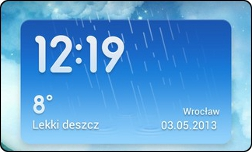

FAQ MIUI v5
- Nie mogę pobrać motywu?
Zaloguj się na swoje konto Xiaomi. "Ustawienia" > "Dodaj konto" > "Xiaomi".
- Jak ustawić zdjęcia HD kontaktów?
Zaloguj się na swoje konto Xiaomi i przenieś kontakty z Google na Xiaomi.
"Ustawienia" > "Dodaj konto" > "Xiaomi".
"Osoby" > "Kopia i przywracanie kontaktów" > "Kopiowanie na konto Xiaomi"
- Jak włączyć roota?
Folder "Bezpieczeństwo" > "Uprawnienia" > "ROOT" > "Uprawnienia ROOT".
- Jak włączyć powiadomienia aplikacji np. Facebook Messenger?
Przejdź do "Ustawienia" > "Aplikacje" > "Facebook Messenger" > "Pokaż okna Pop-up".
- Dlaczego nie mogę ustawić motywu z karty SD?
Przeczytaj artykuł Nowa Polityka Motywów MIUI - Obowiązuje od 1 Maja, 2013
- Skąd wziąć Pogodę MIUI?

Pobierz Weather BZ